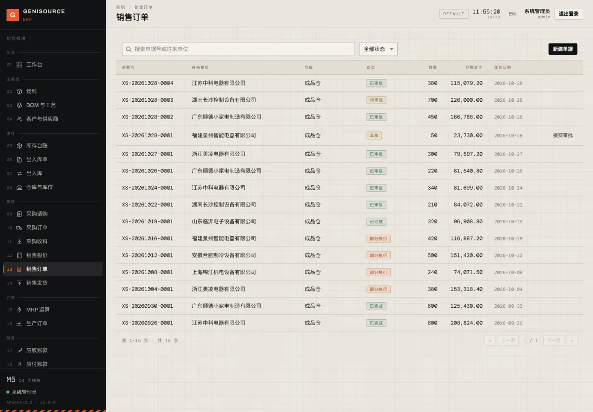
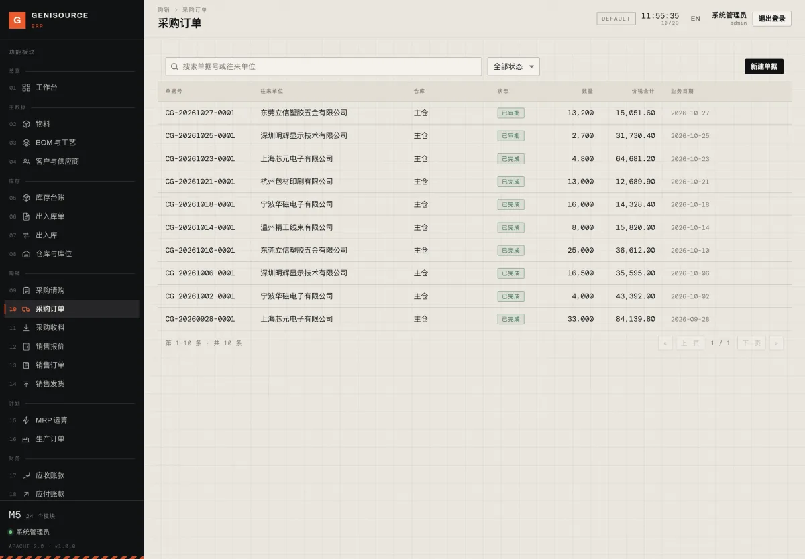
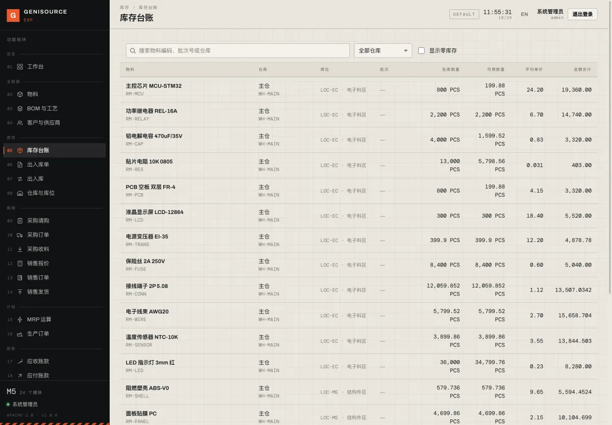
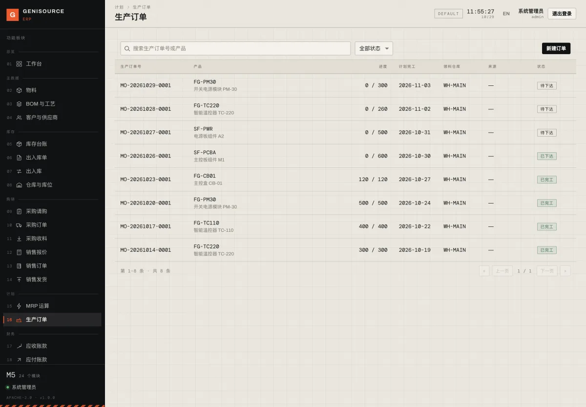
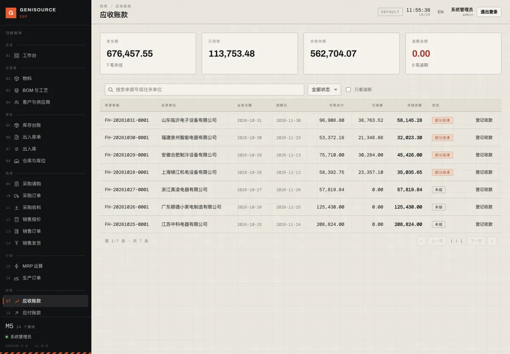
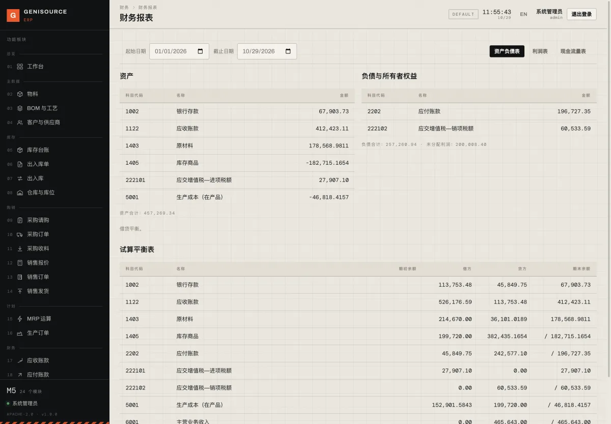
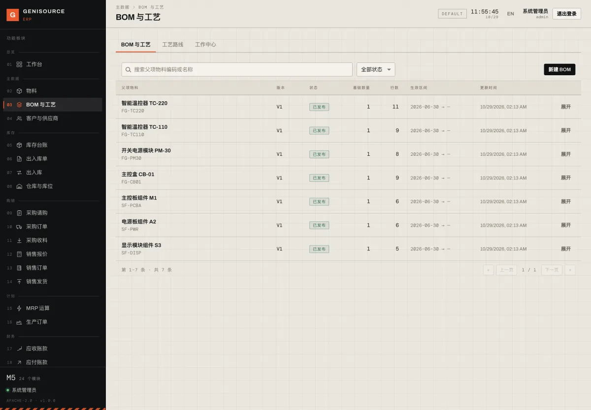

01
Excel 排产
一份订单表三个版本，谁在改、改到哪，说不清。月底数量对不上，只能全部重数一遍。
01 为什么
不是人不努力，是数不在一处
一份订单表三个版本，谁在改、改到哪，说不清。月底数量对不上，只能全部重数一遍。
料在仓里，够不够下周的订单却没人答得上。等停线了才发现，缺的只是那颗六毛钱的电容。
单据在车间、台账在财务、成本在老板脑子里。这个月到底赚没赚，要等到下个月才敢说。
这一单，到底赚了多少？
老板问 · 财务算三天 · 车间说不知道
02 一条链
从客户下单到钱回账上
价格、数量、账期、交期一次录清。低于成本线、超出信用额度，当场提醒。
按 BOM 逐层展开，扣掉现存、已锁定和在途，算出每个料真正缺多少、最晚哪天要到。
缺口一键转采购单，按供应商的交货天数倒排下单日；超预算的单据走审批。
工单下达先占料，缺料当场拦下不许开工；完工入库，成本自动进账。
发货扣库存、生成应收；成本按移动加权平均结转，这一单赚多少，发货当天就有数。
收到钱直接核销到单；谁欠多久、逾期几天，一张表看全，不用再翻对账单。
给 50–500 人制造厂用的计划与账务系统。把「料、单、账」三件事做透：算得清、管得住、对得上。可以整套上，也可以先上一个模块。
不是给集团用的庞然大物，也不做高级排程、立库调度这类我们做不好的事。宁可边界清楚，也不拿半成品当卖点。
03 承诺
做每个功能时的底线
缺料不是靠感觉，是算出来的：毛需求加上安全库存、扣掉现存与在途，剩下的才是真要买的。每一步都能点开看数从哪来。
收货、发货、完工都会自己生成凭证，不用财务再录一遍。记错了是红字冲销而不是删掉，历史永远查得到。
开源、可导出、能自己改。哪天不想用我们了，数据带走、找别的团队接手都行——我们靠把产品做好留住你，不靠把门锁上。
这三条，是我们砍功能时唯一的标准：算不清、对不上、带不走的，不做。
04 能力
截图取自一家控制器厂的真实数据
报价、订单、发货一条线。每张单走到哪一步、还剩多少没发、钱收到没有，打开就能答客户。

把订单需求按 BOM 往下拆，扣掉仓库现存、已锁定和在途，剩下的缺口按交期倒排——该买就买，该自己做就下工单。

请购、比价、下单、收料一路到底。收料那一刻，库存增加、应付增加、凭证生成，三件事一次做完。

多个仓库、库位、批次一起管。数字由单据走出来的，不是人敲进去的——所以敢拿来算料、也敢拿来报成本。

工单按工艺展开工序、按 BOM 展开用料。下达先占料，领料才出库——缺料在开工前就拦住，而不是做到一半停线。

发货即生成应收，收料即生成应付。收一笔钱就核销到具体单据，账龄、逾期一眼看全，催款不用再翻 Excel。

凭证由业务自动生成，总账、试算平衡、资产负债表、利润表、现金流量表随时可出，不用财务月底再抄一遍。

多级 BOM、替代料、工艺路线集中管。发布即锁定版本，改版留痕——算料、领料、成本都从这里取数，不再各说各话。

05 适合谁
对号入座，比听介绍有用
如果你是这样，它大概率能帮上忙：
这些情况，先别急：
建议先上一个模块。 大多数厂从「库存 + 算料」开始，两三个月看到效果，再往上加采购、生产与财务。不建议一次全上。
07 联系
通常一个工作日内回复
扫码加我们的企业微信，说一句你的厂做什么产品、大概多少人、现在用什么在管账和生产。我们会先用你的实际场景，讲清楚哪几个模块值得先上、哪些可以先不上。
不推销全套，也不建议一上来就大改流程——先让数字对得上，再谈优化。
添加时请备注厂名与主要产品，方便我们对上号。